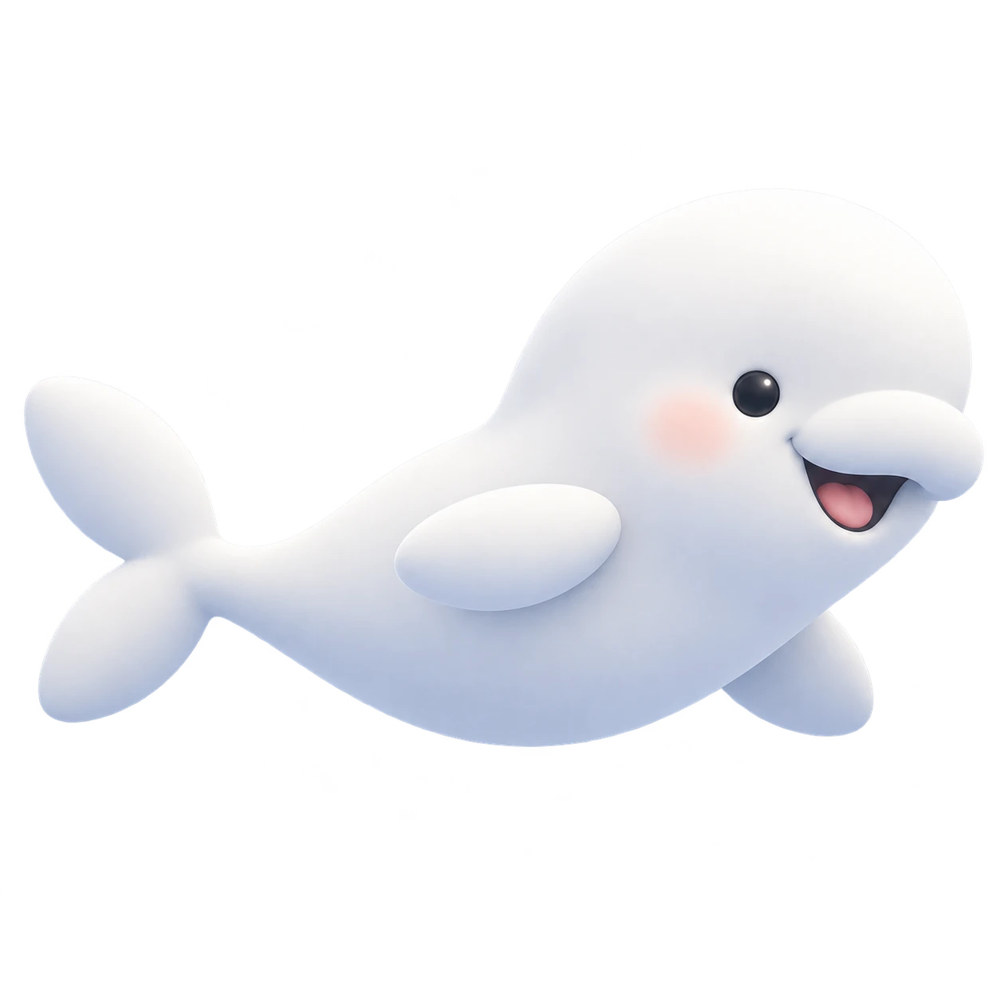

돈의 흐름을,
나의 리듬으로.
MyWave는 대학생에게 오늘 더 써도 되는 돈 하나를 알려 주는 재무 웹앱입니다. 아래 장면 하나가 이 서비스가 돌아가는 방식의 전부입니다. 30초만 지켜보세요.

숫자를 저장하지 않고 매번 계산한다
기록을 하나 지워 보세요. 저장해 둔 숫자가 없어서 고칠 곳이 따로 없고, 모든 화면이 같은 답으로 바뀝니다.
거래를 고치면 처음부터 다시 재생한다
보유 종목은 거래 기록을 날짜순으로 다시 돌려서 만듭니다. 첫 줄을 고치면 마지막 평균단가까지 달라집니다.
AI의 답을 코드로 검사한다
모델이 쓴 답은 두 문을 지나야 사용자에게 갑니다. 하나라도 걸리면 버리고 정해진 문장으로 답합니다.
관계도
MyWave 화면이 읽고 쓰는 테이블 14개와 로그아웃을 기억하는 revoked_token입니다. 물방울은 관계를 따라 흐릅니다. 표를 누르면 DDL 칸, JPA 엔티티 필드, 도메인 메서드, 리포지토리 쿼리, 그 표가 등장하는 흐름이 나옵니다.
읽기 전에
memberId 같은 숫자 칸을 들고 있어서, 그림의 선은 코드가 지키는 관계입니다. 남의 기록을 못 고치게 막는 것도 서비스의 findOwned…()입니다.numeric(38,2), 자바에서는 BigDecimal입니다.holding과 portfolio는 계산 결과입니다. 거래를 바꿀 때마다 지우고 거래 기록을 날짜순으로 다시 재생해 만듭니다.@Table이 적힌 엔티티는 셋뿐이고, 나머지는 Spring Boot 기본 이름 규칙을 따릅니다.monthly_budget(member_id, budget_month)와 holding(portfolio_id, stock_id)에 유니크 제약이 없고, expense(member_id, spent_date)에 인덱스가 없습니다.흐름
버튼 하나가 눌린 뒤 어떤 함수가 어떤 순서로 불리는지를 실제 코드에서 추적했습니다. 단계마다 층, 함수 이름, 파일과 줄 번호, 하는 일, 코드 조각이 있습니다. 줄 번호는 조사 시점의 origin/main 기준입니다.
기술
React 앱 하나, Spring Boot 서버 하나, MySQL 하나입니다. 같은 Dockerfile로 로컬 compose와 Railway에 올라가고, 주소는 mywave.day입니다.
요청이 지나가는 층
화면 쪽 버전
서버 쪽 버전
빌드와 배포
파일별로 눈에 띄는 장치를 모았습니다.
모든 요청에 걸리는 장치
예외 처리, 입력 한도, 운영 부팅 검사, 시계, 보안 설정입니다.
화면 주소
라우트 개 펼치기
움직임
MyWave가 살아 있어 보이는 이유를 코드로 풀었습니다. 벨루가의 표정을 고르는 기준, 혼자 노는 주기, 탱글한 곡선, 그리고 84초짜리 /story 소개의 구조입니다.
잔 높이에 따라 달라지는 벨루가
벨루가를 이루는 모듈
움직임 곡선과 키프레임
/story: 로그인 없이 보는 소개
소개를 움직이는 함수 개
실험실
서버의 계산과 검사를 이 페이지에 옮겨 직접 돌려 볼 수 있게 했습니다. 운영 서버에는 요청을 보내지 않습니다.
오늘 더 써도 되는 돈 TodayService.today()
왜 "어제까지"로 정하나. 오늘 쓴 돈까지 넣으면 커피를 살 때마다 하루 예산이 같이 줄어, 남은 돈이 두 번 깎여 보입니다.
왜 100원 단위로 내리나. 예산을 넘기지 않는 쪽으로 틀리기 위해서입니다.
토큰 버리기 TokenRevocationService
같은 계정으로 휴대폰과 노트북에서 로그인한 상태입니다. 어느 토큰이 401이 되는지 보세요.
평균단가 재생 Holding.buy() · sell()
5월 매수 단가를 고치면 그 뒤가 전부 다시 계산됩니다. 종목과 단가는 예시입니다.
| 날짜 | 거래 | 수량 | 단가 | 보유 | 평균단가 |
|---|
코치 답변 검사기 CoachAnswerGuard
근거 없는 숫자와 투자 조언 말투를 잡는 두 검사를 옮겼습니다. 예시를 고르거나 직접 고쳐 보세요.
개인정보 가리기 CoachPrivacy.redact()
질문에 직접 적은 이메일, 전화번호, 긴 번호를 모델에 보내기 전에 가립니다.
입력 한도 Limits
기획과 연표
2026-2학기 파란학기제(학생설계 · 창업·창직 · AI+X) 계획서에서 출발했습니다. 과제명은 「AI 기반 개인 자산·소비·투자 관리 및 금융 습관 코칭 서비스 'MyWave' 개발」이고, 디지털미디어학과와 경영인텔리전스학과 두 명이 한 팀입니다.
쓰는 돈과 투자를 따로 본다
대학생과 사회초년생은 금융 앱을 쓰면서도 소비 관리와 투자 판단을 이어서 보지 못하고 꾸준히 관리하지 못합니다.
운용하지 않고 점검을 돕는다
AI는 매수·매도 추천이나 수익 예측을 하지 않고, 사용자가 자기 상태를 스스로 알아차리게 돕는 자기점검형 코칭입니다.
실제 사용자에게 내놓는다
PWA로 배포하고 실사용자 1,000명 이상을 목표로 잡았습니다. 텀블벅 펀딩은 지도교수 의견에 따라 진행하면서 결정하기로 했습니다.
16주 추진 일정
예산 120만 원
항해 기록
달마다 쌓인 커밋
병합 커밋을 뺀 79개입니다.
계획과 지금
점검과 결정
mywave.day로 공개한 날의 점검 기록과, 이 서비스가 숫자를 다루는 방식에 대한 결정들입니다.
API 검사 152개 중 통과
| 점검 전 | 수정 후 | |
|---|---|---|
| 백엔드 테스트 | 29개 | 41개 |
| 공개 데모 계정 | 누구나 비밀번호를 바꿀 수 있음 | 프로필과 비밀번호 잠금 |
| 로그아웃한 토큰 | 24시간 동안 계속 통함 | 즉시 무효 |
| 오류 문구 | Request failed with status code 400 | 서버가 적은 한글 문장 |
남은 6개는 없는 기록에 404 대신 400을 주는 상태 코드 관례입니다.
AI와 사람이 나눈 일
컨트롤러와 DTO를 읽고 검사 152개를 설계. 걸린 항목마다 코드에서 원인을 찾아 보고. 수정안과 테스트 작성. 고친 것을 화면에서 다시 눌러 보다 문제 셋을 더 발견.
무엇부터 고칠지(계정 문제 먼저), 어디까지 고칠지, 운영에 올릴지. 운영 데이터는 읽기와 거절되는 요청만.
문서의 결론: AI에게 일을 시킬 때는 끝났다는 말이 아니라 다시 돌릴 수 있는 검사를 받아야 합니다.